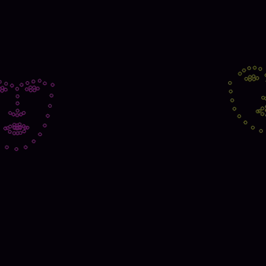
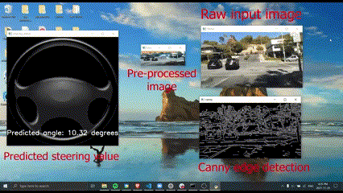

|
I'm really interested in how we can use vision to make cars (and robots!) interact with the real world. Current: working on sim2real training for dexterous manipulation @Pathak Research Group, studying CS and Robotics at CMU. Previously spent time working vision-based end2end systems for autonomous vehicles, building GANs, and messing around with SLAM. |
|
My primary research interests are in leveraging computer vision and reinforcement learning to create systems that generalizeable across a variety of tasks. You can find some of my projects in this space below. For a full list, please check my Github. |

|
October 2024 Github / Website Created state-of-the-art pre-trained computer vision models + greedy-based path planning algorithm to navigate indoor enviroments for the visually impaired. |
|  |
October 2024 Github Used spectral analysis, landmark detection, mathematical modelling, and eye tracking to gain insights on debates and identify misinformation and bias. |

|
February 2023 - May 2023 Github Leveraging CUDA + OpenCV + PyTorch's C++ API (LibTorch) using TorchScript to run semantic segmentation at the highest FPS possible |
|  |
November 2021 - January 2022 Research Proposal / Tweet Used Deep Convolutional Networks to control self-driving steering, read more than 60 papers in the space, and met some really smart people from the wayve.ai + comma.ai team! |

|
September 2021 - October 2021 Medium article / Github Using DC-GANs to create synthetic data that can be used to train + validate the robustness of autonomous vehicles. End goal is to apply to extrapolate the data pool we have for adverse driving scenarios/any situations where limited data is available. |
|
Template from Jon Barron |